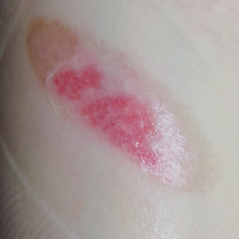

· 원인
· 특징
① 일상생활에서 쉽게 위험에 노출되며, 접촉화상은 열탕화상 다음으로 빈번하게 발생합니다.
② 겨울철 난방용품에 의한 경우가 많으며 레저활동 증가로 여름철에 야외 캠핑용품에 의한 경우도 증가하고 있습니다. 또한 다리미, 고데기, 냄비 등 주방용품, 음식점 불판, 오토바이머플러 등 우리가 쉽게 인지 하지 않고 있는 매우 다양한 원인이 일상생활에 산재해 있습니다.
③ 비교적 작은 부위에 발생하는 경우가 많으나, 피부가 직접적으로 뜨거운 열기에 노출이 되기 때문에 상처가 깊은 경우가 많습니다.
④ 넓은 범위로 주로 발생하는 열탕화상에 비하여 통증이 비교적 적어 상처 관리가 소홀해지고, 상처가 악화된 후 내원하는 경우가 많습니다.